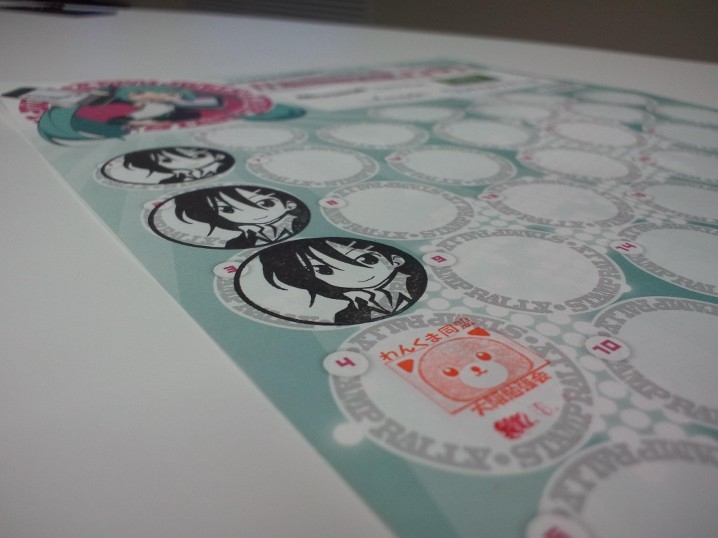

わんくま同盟 大阪勉強会 #50
公開日：

わんくま同盟 大阪勉強会 #50 （http://www.wankuma.com/seminar/20120804osaka50/） に参加してきました。
まぁ、ほとんど尾上さんを見に行ったようなものですねｗ
しかも、あんまり理解していないという。ただ、自分が囚われていた先入観を知ることができた点に関しては、行った価値があったかな。
別にプログラミングに限りませんが、モノゴトの把握には大きく分けて二つの方法があります。
ひとつは観念的な方法。この方法は、つねに「理想（モデル）」から出発し、それに即した「現実（実装）」を導き出します（演繹）。この場合、「現実（である）」は常に「理想（べきだ）」の影です。
もうひとつは実践的な方法。この方法は、つねに「現実（である）」が出発点です。まず、それに即した「ひな形（モデル）」を作ります。それに改良を加えて、漸進的に「理想（べきだ）」へ近づこうとします（帰納とテスト）。
前者の利点は、演繹、つまり“理論”に拠っているということ。数学の“定理”のように、前提さえ共有できるならば、さまざまなケースへ応用することが可能です。
ただ、“定理”には必ず前提となる“公理”がある。この“公理”についてコンセンサスがとれていなかったり、疑わしかったり、定義できない場合は、前者のアプローチは使えない。そんな場合、後者の実践的なアプローチが有用になります。
しかし、後者にも欠点はある。たとえば、“帰納”つまり“経験”に拠っている点。「昨日正しかったから、明日も正しい」？ そう仮定しても大方問題がないとしても、それは決して“理論”的ではない。多分、万人を説得することは不可能でしょう。実践的アプローチは常にテストにさらされ、完成することがない。
とはいえ、ソフトウェアを作るということは常に“実践”的であるはず。ならば、そのアプローチに関する主張は、誰かが絵に描いた“理想”ではなく、あくまでも自分の“経験”に根付いているべきだし、そうであってこそ実りの多いモノになるんだろうなと思いますね。無論、ほかのひとの“理想（モデル）”を学ぶのも大切。自分の“ひな形（モデル）”としてレパートリーに加えておけば、“現実（である）”を認識・把握し、実装するのに役立つ。そういう意味では、この2つのアプローチはまさしく「車の両輪」なのだなと。
まぁ、そんなあまり関係のないことを考えながら聞いていました。何が言いたいのかというと「モデル（Model）っていう言葉の意味多すぎだし、みんな適当に使いすぎ」ってことですかねｗ